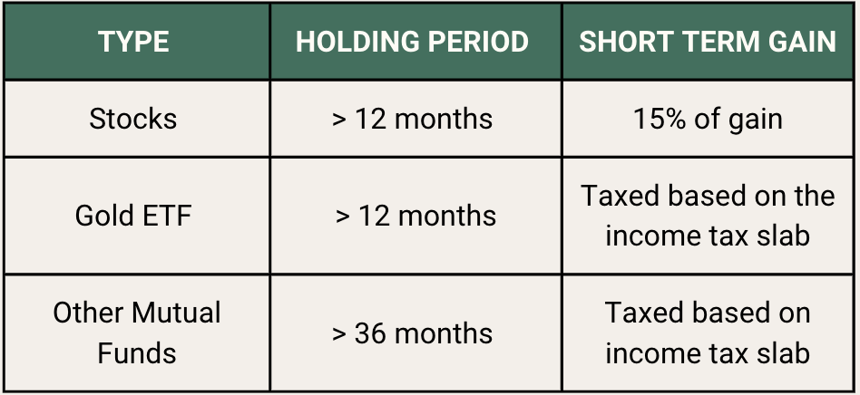

Sales Tax: Sales tax is a consumption tax levied on the sale of goods and services. It is typically a percentage of the retail price of the item being purchased. Sales tax is collected by the seller and then remitted to the government.
Value Added Tax (VAT): VAT, or commercial tax, is imposed at all supply chain stages, excluding zero-rated items like food and essential drugs. VAT is imposed by state governments, each determining its own tax rates on goods sold within the state.
Customs Duty and Octroi: Customs duty is applied to imported goods, ensuring taxation on products entering the country. Octroi, imposed by state governments, serves a similar purpose but focuses on goods crossing state borders within India.
Excise Duty: Excise duty, also known as Central Value Added Tax (CENVAT), is imposed on manufactured goods in India. It differs from customs duty as it applies only to domestically produced goods. The Central Excise Rule mandates payment of duty on excisable goods, restricting their movement without duty payment from the manufacturing point.
Specified income – Total income excluding income by way of dividend on shares and short-term capital gains in case of listed equity shares, equity-oriented mutual fund units, units of business trust, and long-term capital gains.
The new income tax regime includes a standard deduction of INR 50,000, allowing salaried taxpayers to avail of an upfront deduction of INR 50,000 from their total taxable income, which was previously only available under the old structure.
Resident individuals having total income not exceeding Rs. 7,00,000 can avail rebate of 25,000 or actual tax liability whichever is lower. Following are the basic documents mandatory to file an ITR (Income Tax Return) in India: PAN (Permanent Account Number); Aadhar Number; Form 26AS; Bank Account Details; Challan of any advance tax or self-assessment tax (if paid during the year); and Details of the original return (if filing a revised return).
PAN (Permanent Account Number);
Aadhar Number; Form 26AS;
Bank Account Details;
Challan of any advance tax or self-assessment tax (if paid during the year); and Details of the original return (if filing a revised return).
Section 80C: This section allows you to deduct up to ₹1.5 lakh from your taxable income for investments made in certain financial instruments, such as Public Provident Fund (PPF), Employee Provident Fund (EPF), Unit Linked Insurance Plans (ULIPs), National Pension System (NPS), Equity Linked Saving Schemes (ELSS), and five-year tax-saving bank fixed deposits.
Section 80D: This section allows you to deduct up to ₹25,000 from your taxable income for the premiums paid towards health insurance for yourself, your spouse, and your dependent children. If you are paying for your parents' health insurance, you can claim an additional deduction of ₹25,000, up to a maximum of ₹50,000 per year.
Section 80E: This section allows you to deduct the interest paid on an education loan for yourself, your spouse, or your children. The deduction is not limited to any specific amount.
Section 80TTA: This section allows you to deduct the interest earned on your savings account deposit up to ₹10,000 from your taxable income.
Section 80EE: This section allows first-time home buyers to deduct the interest paid on a home loan up to ₹50,000 from their taxable income. The loan must have been taken between April 1, 2019, and March 31, 2022, and the value of the house should not exceed ₹50 lakh.
Section 80 EEA: This section allows first-time home buyers to deduct an additional ₹1.5 lakh from their taxable income for the interest paid on a home loan. The loan must have been taken between April 1, 2019, and March 31, 2022, and the value of the house should not exceed ₹45 lakh.
Utilize Section 24 of the Income Tax Act for Tax Savings:
House Rented Out: Claim the entire interest paid on the housing loan as a deduction.
House Vacant/Self-Occupied: Claim up to Rs. 2 lakhs interest deduction.
Claim Deductions on Premium Paid for Health Insurance
Maximum deduction for self and family: Rs. 25,000
Additional deduction for parents:
Rs. 25,000 if they are not senior citizens
Maximum rebate amount: Rs. 12,500.To file income tax return
Claim Rebate under Section 87A
Eligible taxpayers: Individuals with a total taxable income of Rs. 5 lakh or lower.
Maximum rebate amount: Rs. 12,500.To file income tax return
it is a type of financial transaction tax payable in India on every purchase or sale of securities that are listed on the Indian stock exchanges. The two main stock exchanges are the National Stock Exchange, or the NSE, and the BSE, or the Bombay Stock Exchange. This would include shares, derivatives, or equity-oriented mutual funds investment units.
Securities transaction tax is a direct tax and is levied and collected by the central government of India.
The STT rate varies depending on the type of security being traded. For example, the STT rate for equity shares is 0.1%, while the STT rate for futures contracts is 0.005%.
Capital Gain Tax in India is the tax imposed by the government on the profit earned from the sale of certain assets, such as stocks, bonds, real estate, or other investments. This tax applies to both individuals and businesses.
When you sell an asset for more than you paid for it, you have a capital gain. Conversely, if you sell an asset for less than you paid for it, you have a capital loss. Capital gains tax is typically only applied to capital gains, not to the total amount received from the sale.
Taxpayers must file their income tax returns for capital gains by submitting right ITR form to the Income Tax
category of capital assets:
The stock of consumables or raw materials held for use in business or profession.
Personal belongings meant for personal use like clothes, furniture, etc.
A piece of agricultural land is located in a rural area.
TSpecial bearer bonds, 6.5% gold bonds (1977), 7% gold bonds (1980), or national defence gold bonds (1980) which the Central Government has issued.
Gold deposit bond (1999), issued under the gold deposit scheme or deposit certificate issued under the Gold Monetisation Scheme, 2015, notified by the Central Government.
Short-term capital gains (STCG) are the profits you earn when you sell off your capital assets within one year of holding them. Note that the holding period varies as per the capital asset.
When the security transaction tax is applicable: Short-term capital gain tax is 15% When a security transaction tax is not applicable, the short-term capital gain tax will be calculated based on the taxpayers' income and will be automatically added to the taxpayer's ITR and charged at normal slab rates.
Long-term capital gain tax (LTCG) are the profits you earn when you sell off your capital assets after one year. Note that the period of holding for different assets to be claimed as long-term assets varies according to the asset.
Long-term capital gain tax is applicable at 20% except on the sale of equity shares and the units of equity-oriented funds.
Long-term capital gains are 10% over and above Rs 1 lakh on the sales of equity shares and units of equity-oriented funds.
Securities transaction tax is a direct tax and is levied and collected by the central government of India.
The STT rate varies depending on the type of security being traded. For example, the STT rate for equity shares is 0.1%, while the STT rate for futures contracts is 0.005%.
The exemption on two house properties shall be available once in a lifetime to a taxpayer, provided the capital gains do not exceed Rs. 2 crores.
Where jewellery is sold: In case of sale of broker’s jewellery and where a broker’s services were involved in securing a buyer, the cost of these services can be deducted.
Agricultural land in a rural area in India is not considered a capital asset and therefore any gains from its sale are not chargeable to tax.
Is a tax that India imposes on the supply of specific products and services. It was implemented to replace a variety of previous indirect taxes, including the value-added tax (VAT), service tax, purchase tax, excise duty among others.
There are four different components of GST such as CGST, SGST, IGST, and UTGST.
CGST:CentralGoodsandServicesTax(CGST)ischargedontheintra-state
supply of products and services.
SGST: StateGoodsandServicesTax(SGST) like CGST, ischargedonthesale of products or services within a state.
IGST: IntegratedGoodsandServicesTax(IGST) is charged on inter-state transactions of products and services.
UTGST: UnionTerritoryGoodsandServicesTaxisleviedonthesupplyof products and services in any of the Union Territories in the country, viz. Andaman and Nicobar Islands, Daman and Diu, Dadra and Nagar Haveli, Lakshadweep, and Chandigarh. UTGST is levied along with CGST.
Different goods and services have different GST values to them- 5,12, 18,28, claim GST on depreciating assets, such as work vehicles or plant equipment and the like.
You can claim GST on second-hand goods without a tax invoice.
Register too late and you may end up paying the GST you should have collected from customers, along with unpleasant interest and penalties. Register too soon and it could cost you thousands of dollars unnecessarily should your customers not be registered for GST.